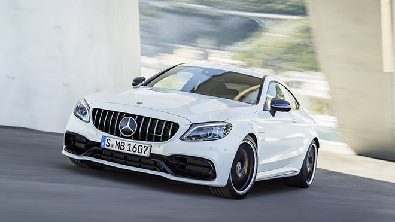

Mercedes’in hikayesi 1897 yılında Fransa’nın Nice kentinde başlar. Dönemin Avusturya Nice Başkonsolosu Emil Jellinek, Daimler fabrikasını ziyaret eder ve üretilen otomobillerden birini çok beğenerek satın alır. Özellikle Fransız Rivierası’nda geçirdiği zaman zarfında kullandığı araç epeyce sükse yapar. Jellinek, aracı 2 yıl kadar kullandıktan sonra fabrikayı tekrar ziyaret eder ve 23 beygir gücünde, o zamanlar yarış otomobili kabul edilen bir araç daha satın alır. Otomobile büyük kızı Mercedes’in ismini vererek, Nice’de zaman zaman yapılan araba yarışlarından birine katılır ve birinci olur. Aynı zamanda hem başarılı bir tüccar ve iş adamı, hem de uluslararası finans piyasaları ve aristokrat sınıf arasında iyi bilinen, tanınan bir sima olduğu için zevkle ticareti birleştirme planı yaparak Daimler’e 36 adet otomobil siparişi verir. Jellinek’in siparişteki tek koşulu, otomobillere kızı Mercedes’in adının verilmesi olur.
Daimler araçları üretir ve Jellinek’e teslim eder. Başarılı bir tüccar olan Jellinek de 1899-1901 yılları arasında araçların tamamını satar. Bu başarıdan etkilenen Daimler, Jellinek ile anlaşarak, üreteceği araçlara Mercedes adını koymaya karar verir.
İspanyolca konuşulan tüm Latin ülkelerinde çok sık kullanılan bir isim olan Mercedes, hem zerafet anlamına geliyor hem de Mars gezegeninin adı. Her iki anlamıyla da son yüzyıldır üretilen araçlara verilmiş en iyi isimlerden biri. İsmin 1902 yılında Daimler tarafından tescil edildiğini de belirtelim.
1926 yılındaki birleşmenin ardından, daha güçlü, daha kaliteli ve her ihtiyaca uygun, elit araçlar üretme düsturuyla hareket eden firma başarıdan başarıya koşuyor. Aldığı ödüller, yaptığı yenilikler ve imza attığı ilkler ile tarih satıralarının bazıları işgal ediyor.
